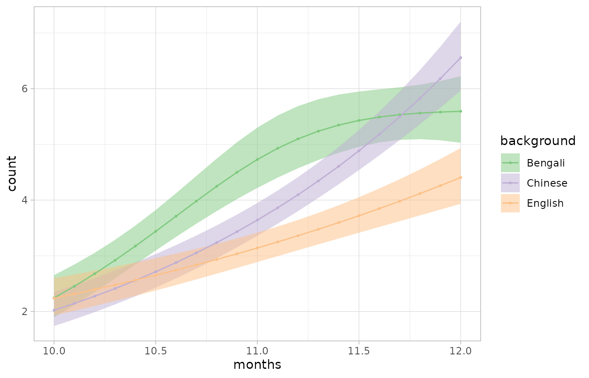
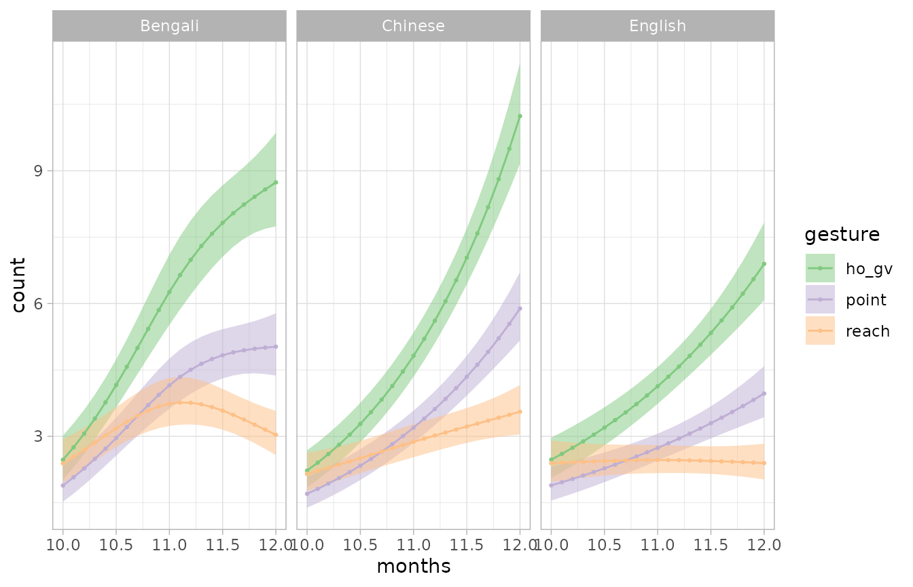
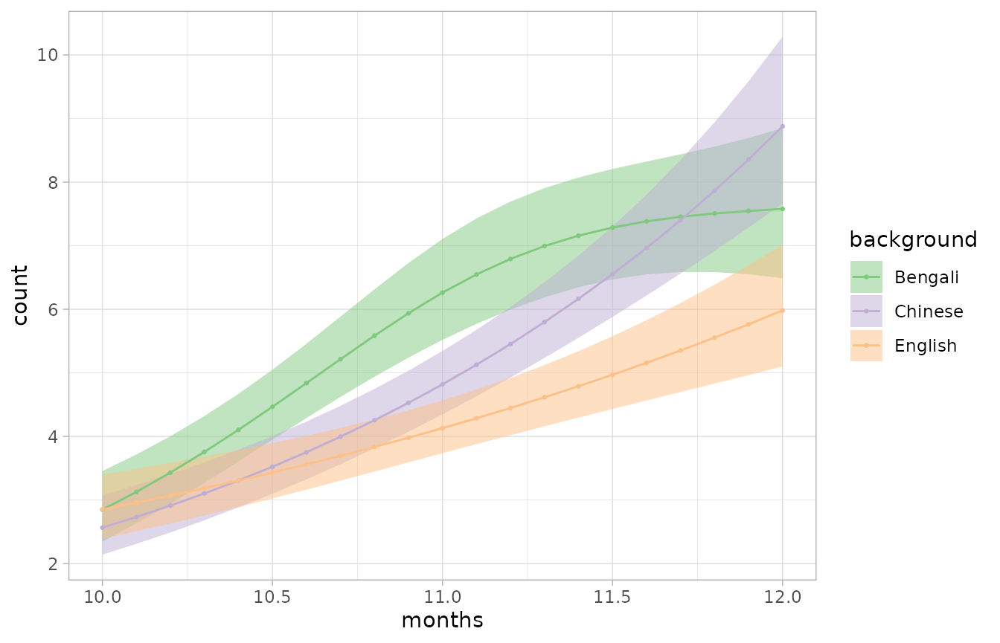
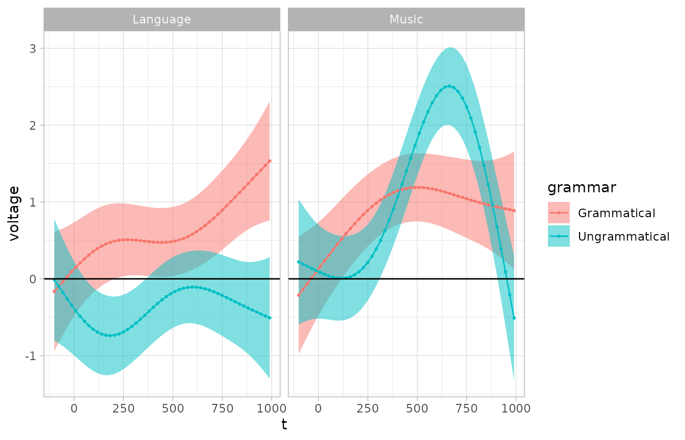

library(tidygam)
library(mgcv)
#> Loading required package: nlme
#> This is mgcv 1.9-1. For overview type 'help("mgcv-package")'.
library(dplyr)
#> Error in get(paste0(generic, ".", class), envir = get_method_env()) :
#> object 'type_sum.accel' not found
#>
#> Attaching package: 'dplyr'
#> The following object is masked from 'package:nlme':
#>
#> collapse
#> The following objects are masked from 'package:stats':
#>
#> filter, lag
#> The following objects are masked from 'package:base':
#>
#> intersect, setdiff, setequal, union
library(ggplot2)
theme_set(theme_light())Overview
The tidymv package offers two main user-oriented functions:
predict_gam(): returns predictions of the outcome variable based on the predictors in the GAM model. The user can specify specific values for any predictor, and exclude model terms.get_difference(): returns the difference between two smooths and those intervals along the smooth that do not include 0.
The output of these function can then be plotted with
plot(), through the methods plot.tidygam() and
plot.tidygam.diff().
Basic model prediction
Let’s start with a simple model and get model-based predictions.
We will use the gest data table, available in tidygam.
The table consists of counts of gestures performed by infants of three
cultural backgrounds who participating in a longitudinal study (see
?gest for details and references).
data("gest")
gest
#> # A tibble: 540 × 5
#> dyad background months gesture count
#> <fct> <fct> <dbl> <fct> <dbl>
#> 1 b01 Bengali 10 ho_gv 0
#> 2 b01 Bengali 10 point 0
#> 3 b01 Bengali 10 reach 5
#> 4 b01 Bengali 11 ho_gv 0
#> 5 b01 Bengali 11 point 1
#> 6 b01 Bengali 11 reach 8
#> 7 b01 Bengali 12 ho_gv 3
#> 8 b01 Bengali 12 point 0
#> 9 b01 Bengali 12 reach 0
#> 10 b02 Bengali 10 ho_gv 1
#> # ℹ 530 more rowsThe following GAM models the overall trend in number of gestures from 10 to 12 months of age.
gs <- gam(
count ~ s(months, k = 3),
data = gest,
family = poisson
)
summary(gs)
#>
#> Family: poisson
#> Link function: log
#>
#> Formula:
#> count ~ s(months, k = 3)
#>
#> Parametric coefficients:
#> Estimate Std. Error z value Pr(>|z|)
#> (Intercept) 1.27491 0.02361 53.99 <2e-16 ***
#> ---
#> Signif. codes: 0 '***' 0.001 '**' 0.01 '*' 0.05 '.' 0.1 ' ' 1
#>
#> Approximate significance of smooth terms:
#> edf Ref.df Chi.sq p-value
#> s(months) 1.861 1.981 248.9 <2e-16 ***
#> ---
#> Signif. codes: 0 '***' 0.001 '**' 0.01 '*' 0.05 '.' 0.1 ' ' 1
#>
#> R-sq.(adj) = 0.0372 Deviance explained = 6.61%
#> UBRE = 6.1921 Scale est. = 1 n = 540Now we can obtain the predicted counts with
predict_gam().
gs_pred <- predict_gam(gs)
gs_pred
#> # A tibble: 11 × 5
#> months count se lower_ci[,1] upper_ci[,1]
#> <dbl> <dbl> <dbl> <dbl> <dbl>
#> 1 10 0.768 0.0498 0.670 0.865
#> 2 10.2 0.896 0.0396 0.818 0.973
#> 3 10.4 1.02 0.0340 0.954 1.09
#> 4 10.6 1.14 0.0334 1.07 1.21
#> 5 10.8 1.25 0.0352 1.18 1.32
#> 6 11 1.35 0.0363 1.28 1.42
#> 7 11.2 1.44 0.0346 1.37 1.51
#> 8 11.4 1.51 0.0308 1.45 1.58
#> 9 11.6 1.58 0.0269 1.53 1.64
#> 10 11.8 1.65 0.0265 1.59 1.70
#> 11 12 1.71 0.0315 1.64 1.77Plot predicted values
predict_gam() returns an object of class
tidygam, which can be plotted with plot().
The user has to specify the “series” used as the x-axis. The outcome variable is automatically selected for the y-axis.
Since the gs model used a log-link function, the output
of predict_gam() is in log-odds, rather than in counts.
We can convert the log-odds to counts by exponentiating them. The
tran_fun argument allows the user to specify a function to
transform the predicted outcome values with.
predict_gam(gs, tran_fun = exp) %>%
plot(series = "months")Models with by-variables
Smooths can be fitted to different levels of a factor using so-called
by-variables, specified within the smooth function
s() with the by argument. Note that smooths
are automatically centred so you need to include the
by-variable as a parametric term too.
In this model, we fit a smooth along months for each
background in the data.
gs_by <- gam(
count ~ background + s(months, by = background, k = 3),
data = gest,
family = poisson
)
summary(gs_by)
#>
#> Family: poisson
#> Link function: log
#>
#> Formula:
#> count ~ background + s(months, by = background, k = 3)
#>
#> Parametric coefficients:
#> Estimate Std. Error z value Pr(>|z|)
#> (Intercept) 1.36119 0.03930 34.634 < 2e-16 ***
#> backgroundChinese -0.06916 0.05694 -1.215 0.22451
#> backgroundEnglish -0.21696 0.05814 -3.731 0.00019 ***
#> ---
#> Signif. codes: 0 '***' 0.001 '**' 0.01 '*' 0.05 '.' 0.1 ' ' 1
#>
#> Approximate significance of smooth terms:
#> edf Ref.df Chi.sq p-value
#> s(months):backgroundBengali 1.935 1.996 83.24 <2e-16 ***
#> s(months):backgroundChinese 1.003 1.006 143.06 <2e-16 ***
#> s(months):backgroundEnglish 1.000 1.000 42.38 <2e-16 ***
#> ---
#> Signif. codes: 0 '***' 0.001 '**' 0.01 '*' 0.05 '.' 0.1 ' ' 1
#>
#> R-sq.(adj) = 0.0384 Deviance explained = 7.72%
#> UBRE = 6.1223 Scale est. = 1 n = 540The predictor for comparison is selected with the
comparison argument in plot().
gs_by %>%
predict_gam(length_out = 20, series = "months", tran_fun = exp) %>%
plot(comparison = "background")Note that the output of plot() is a ggplot2 object,
which can be modified using ggplot2 functions.
gs_by %>%
predict_gam(length_out = 20, series = "months", tran_fun = exp) %>%
plot(comparison = "background") +
scale_color_brewer(type = "qual") + scale_fill_brewer(type = "qual")
Let’s try now a model with both gesture and
background as by-variables.
gs_by_2 <- gam(
count ~ gesture + background +
s(months, by = background, k = 3) +
s(months, by = gesture, k = 3),
data = gest,
family = poisson
)
summary(gs_by_2)
#>
#> Family: poisson
#> Link function: log
#>
#> Formula:
#> count ~ gesture + background + s(months, by = background, k = 3) +
#> s(months, by = gesture, k = 3)
#>
#> Parametric coefficients:
#> Estimate Std. Error z value Pr(>|z|)
#> (Intercept) 1.63549 0.04821 33.927 < 2e-16 ***
#> gesturepoint -0.41072 0.05695 -7.213 5.49e-13 ***
#> gesturereach -0.53554 0.05791 -9.248 < 2e-16 ***
#> backgroundChinese -0.06937 0.05693 -1.219 0.222975
#> backgroundEnglish -0.21719 0.05812 -3.737 0.000186 ***
#> ---
#> Signif. codes: 0 '***' 0.001 '**' 0.01 '*' 0.05 '.' 0.1 ' ' 1
#>
#> Approximate significance of smooth terms:
#> edf Ref.df Chi.sq p-value
#> s(months):backgroundBengali 1.9226651 1.9925158 54.925 < 2e-16 ***
#> s(months):backgroundChinese 1.1043907 1.1961394 84.781 < 2e-16 ***
#> s(months):backgroundEnglish 1.0009022 1.0017885 28.978 < 2e-16 ***
#> s(months):gestureho_gv 1.0014574 1.0028600 4.207 0.0403 *
#> s(months):gesturepoint 0.0003739 0.0007391 0.000 0.9959
#> s(months):gesturereach 1.2383962 1.4167559 25.127 1.51e-05 ***
#> ---
#> Signif. codes: 0 '***' 0.001 '**' 0.01 '*' 0.05 '.' 0.1 ' ' 1
#>
#> Rank: 16/17
#> R-sq.(adj) = 0.0824 Deviance explained = 13%
#> UBRE = 5.7338 Scale est. = 1 n = 540Note that models like this one are conceptually equivalent to linear
models without interactions between the by-variables.
This is clear when plotting the predictions: notice how the shapes of
the smooths are very similar within each background, and they only
differ in slope (this is the effect of including separate
by-variables).
gs_by_2 %>%
predict_gam(length_out = 20, series = "months", tran_fun = exp) %>%
plot(comparison = "gesture") +
scale_color_brewer(type = "qual") + scale_fill_brewer(type = "qual") +
facet_grid(~ background)
If you wish to plot the effect of specific by-variables,
you can exclude terms like in the following code chunk. Note that the
name of terms has to match precisely the name in the model summary and
that you should exclude both parametric and smooth terms with the same
by-variable. You also need to pick any level of the
excluded variable (otherwise the predictions will be repeated for each
level in the excluded variable, but since the variable is excluded, the
predictions will be the same).
to_exclude <- c("s(months):gestureho_gv", "s(months):gesturepoint", "s(months):gesturereach",
"gesturepoint", "gesturereach")
gs_by_2 %>%
predict_gam(length_out = 20, series = "months", tran_fun = exp,
exclude_terms = to_exclude,
# pick any value of the excluded variables.
values = list(gesture = "point")) %>%
plot(comparison = "background") +
scale_color_brewer(type = "qual") + scale_fill_brewer(type = "qual")
The following section illustrates how to specify and plot models with
the GAM equivalent of classical interactions
(e.g. background * gesture).
Models with factor interactions
Classical interactions between factors as usually obtained in linear
models with the : syntax
(e.g. background:gesture) are not possible in GAMs.
An alternative way to specify what are called interactions in
generalised linear models is by creating a new factor which is the
interaction of the two or more factors using the
interaction() function, and include this “factor
interaction” predictors as a by-variable.
gest <- gest %>%
mutate(back_gest = interaction(background, gesture))
gs_i <- gam(
count ~ back_gest + s(months, by = back_gest, k = 3),
data = gest,
family = poisson
)
summary(gs_i)
#>
#> Family: poisson
#> Link function: log
#>
#> Formula:
#> count ~ back_gest + s(months, by = back_gest, k = 3)
#>
#> Parametric coefficients:
#> Estimate Std. Error z value Pr(>|z|)
#> (Intercept) 1.76112 0.05783 30.452 < 2e-16 ***
#> back_gestChinese.ho_gv 0.01249 0.08045 0.155 0.8766
#> back_gestEnglish.ho_gv -0.87624 0.10592 -8.273 < 2e-16 ***
#> back_gestBengali.point -1.07758 0.11358 -9.487 < 2e-16 ***
#> back_gestChinese.point -1.05327 0.12189 -8.641 < 2e-16 ***
#> back_gestEnglish.point -0.19015 0.08283 -2.296 0.0217 *
#> back_gestBengali.reach -0.48164 0.08943 -5.386 7.22e-08 ***
#> back_gestChinese.reach -0.81182 0.09928 -8.177 2.91e-16 ***
#> back_gestEnglish.reach -1.03646 0.10751 -9.640 < 2e-16 ***
#> ---
#> Signif. codes: 0 '***' 0.001 '**' 0.01 '*' 0.05 '.' 0.1 ' ' 1
#>
#> Approximate significance of smooth terms:
#> edf Ref.df Chi.sq p-value
#> s(months):back_gestBengali.ho_gv 1.773 1.949 87.901 < 2e-16 ***
#> s(months):back_gestChinese.ho_gv 1.002 1.003 72.955 < 2e-16 ***
#> s(months):back_gestEnglish.ho_gv 1.001 1.002 40.670 < 2e-16 ***
#> s(months):back_gestBengali.point 1.941 1.997 22.153 2.08e-05 ***
#> s(months):back_gestChinese.point 1.001 1.001 91.257 < 2e-16 ***
#> s(months):back_gestEnglish.point 1.000 1.000 8.542 0.00347 **
#> s(months):back_gestBengali.reach 1.738 1.931 2.725 0.19781
#> s(months):back_gestChinese.reach 1.749 1.937 3.538 0.11830
#> s(months):back_gestEnglish.reach 1.000 1.000 4.261 0.03902 *
#> ---
#> Signif. codes: 0 '***' 0.001 '**' 0.01 '*' 0.05 '.' 0.1 ' ' 1
#>
#> R-sq.(adj) = 0.0999 Deviance explained = 18.8%
#> UBRE = 5.3243 Scale est. = 1 n = 540When predicting values, the user can use the separate
argument to specify factor-interaction variables in the model that can
be split back into their individual components.
This gives greater flexibility when plotting.
predict_gam(
gs_i, tran_fun = exp,
separate = list(back_gest = c("background", "gesture"))
) %>%
plot(series = "months", comparison = "gesture") +
facet_grid(~ background)Models with factor smooth interactions (bs = "fs")
Factor smooth interactions are the GAM equivalent of random/group-level effects (intercepts and slopes).
Let’s work with the struct data, which contains
event-related potentials measures of subjects listening to music and
speech. For each type (music vs language), the stimuli were either
“grammatical” or “ungrammatical” (i.e. the stimuli either respected
structural rules or they did not).
This is a subset of the original data, including voltage values only for electrode 62.
data("struct")
struct
#> # A tibble: 4,400 × 7
#> t electrode voltage subject stimulus.condition grammar.condition
#> <dbl> <dbl> <dbl> <fct> <fct> <fct>
#> 1 -100 62 -0.315 03 Language Grammatical
#> 2 -90 62 -0.320 03 Language Grammatical
#> 3 -80 62 -0.297 03 Language Grammatical
#> 4 -70 62 -0.628 03 Language Grammatical
#> 5 -60 62 -1.05 03 Language Grammatical
#> 6 -50 62 -0.734 03 Language Grammatical
#> 7 -40 62 0.0544 03 Language Grammatical
#> 8 -30 62 0.623 03 Language Grammatical
#> 9 -20 62 1.05 03 Language Grammatical
#> 10 -10 62 1.14 03 Language Grammatical
#> # ℹ 4,390 more rows
#> # ℹ 1 more variable: stim_gram <fct>Let’s fit the model with factor smooth interactions
(bs = "fs").
struct <- struct %>%
mutate(stim_gram = interaction(stimulus.condition, grammar.condition))
st <- bam(
voltage ~ stim_gram +
s(t, by = stim_gram, k = 5) +
s(t, subject, bs = "fs", m = 1),
data = struct
)
summary(st)
#>
#> Family: gaussian
#> Link function: identity
#>
#> Formula:
#> voltage ~ stim_gram + s(t, by = stim_gram, k = 5) + s(t, subject,
#> bs = "fs", m = 1)
#>
#> Parametric coefficients:
#> Estimate Std. Error t value Pr(>|t|)
#> (Intercept) 0.61210 0.19052 3.213 0.00132 **
#> stim_gramMusic.Grammatical 0.22318 0.09401 2.374 0.01763 *
#> stim_gramLanguage.Ungrammatical -0.98969 0.09401 -10.528 < 2e-16 ***
#> stim_gramMusic.Ungrammatical 0.37377 0.09401 3.976 7.12e-05 ***
#> ---
#> Signif. codes: 0 '***' 0.001 '**' 0.01 '*' 0.05 '.' 0.1 ' ' 1
#>
#> Approximate significance of smooth terms:
#> edf Ref.df F p-value
#> s(t):stim_gramLanguage.Grammatical 2.846 3.249 2.889 0.02137 *
#> s(t):stim_gramMusic.Grammatical 2.627 3.022 4.243 0.00531 **
#> s(t):stim_gramLanguage.Ungrammatical 3.270 3.629 1.620 0.09791 .
#> s(t):stim_gramMusic.Ungrammatical 3.848 3.962 26.467 < 2e-16 ***
#> s(t,subject) 50.511 89.000 6.597 < 2e-16 ***
#> ---
#> Signif. codes: 0 '***' 0.001 '**' 0.01 '*' 0.05 '.' 0.1 ' ' 1
#>
#> R-sq.(adj) = 0.202 Deviance explained = 21.4%
#> fREML = 9800.7 Scale est. = 4.8605 n = 4400When predicting values we want to exclude the factor smooth interaction, as we would with random/group-level effects in linear models.
Note that GAM terms to be excluded must be specified as they are
named in the output of summary().
predict_gam(
st,
length_out = 50,
series = "t",
exclude_terms = "s(t,subject)",
# Pick any subject: since we are removing the random effect, it does not
# matter which one you pick, the predictions will be the same
values = c(subject = "03"),
separate = list(stim_gram = c("stimulus", "grammar"))
) %>%
plot(comparison = "grammar") +
geom_hline(yintercept = 0) +
facet_grid(~ stimulus)
If the fs interaction is not removed, the predicted smooth for each individual level in the fs interaction is returned.
predict_gam(
st,
length_out = 50,
series = "t",
separate = list(stim_gram = c("stimulus", "grammar"))
) %>%
plot(comparison = "grammar") +
geom_hline(yintercept = 0) +
facet_grid(~ stimulus)